Група
Океан Ельзи багаторазово визнані публікою й критиками як краща рок-група і краща live-група СНД і Східної Європи.
Океан Ельзи - це експресивний, самовідданий концертний драйв, унікальне поєднання справжньої слов'янської мелодійності з потужною роковою енергетикою.
Платівки групи завжди резонансні й стають гучною подією. Сольні концерти Океан Ельзи, головною умовою яких є живий звук, незмінно викликають великий інтерес.
Склад групи

Святослав
Вакарчук
вокал,автор музики і слів

Денис
Глінін
ударні

Денис
Дудко
бас-гітара

Мілош
Єліч
клавішні,аранжування
Владімір
Опсеніца
гітара
Історія групи
У 1992 році студент Андрій Голяк (вокал) створив гурт «Клан тиші», до якого ввійшли його однокласник Павло Гудімов (гітара), а також знайомий Юрій Хусточка (бас-гітара) та Денис Глінін (ударні). Гурт виступав у палацах культури рідного Львова. Два роки потому А. Голяк одружився й покинув гурт — «Клан тиші» перетворився у тріо. У березні 1994 хлопці познайомилися з 19-річним студентом теоретичної фізики Святославом Вакарчуком. Влітку Вакарчук прийшов на першу репетицію, а з осені четвірка репетирувала регулярно і вже 12 жовтня 1994 року, як прийнято вважати, було створено новий гурт — «Океан Ельзи», який тоді грав переважно суміш поп- і ліричної рок-музики. Святослав став її вокалістом, а також автором більшості текстів і музики гурту.
У грудні 1994 гурт виконав свої перші чотири демозаписи на студії «Галвокс». Перший серйозний виступ відбувся 12 січня 1995 року перед Львівським оперним театром, де зібралося 7 тисяч глядачів. Того ж року в рамках авторського музичного проекту «Є» відомого львівського музиканта Олега Джона гурт зняв свій перший (неофіційний) відеокліп на пісню «Long time ago» (режисер — Володимир Зайковський)та виступив на фестивалі «Червона Рута» у Львові. 1996 року гурт випустив максі-сингл «Будинок зі скла», що розповсюджувався серед шанувальників. Починаючи з того ж 1996-го, ОЕ почав активно концертувати — не тільки в Україні, а й у Польщі, Німеччині та Франції, взяв участь у Таврійських іграх, а також разом з іншими українськими гуртами виступив на одній сцені з Deep Purple під час Осіннього Рок-Марафону в Києві. 1997 року відбувся перший значний сольний концерт гурту у Львові. У квітні 1998-го музиканти переїхали до Києва.
 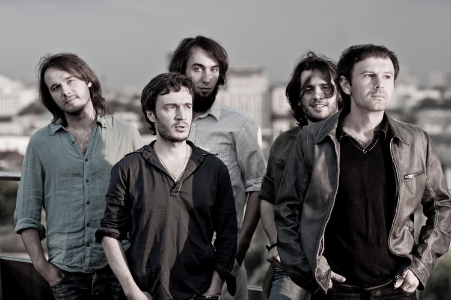
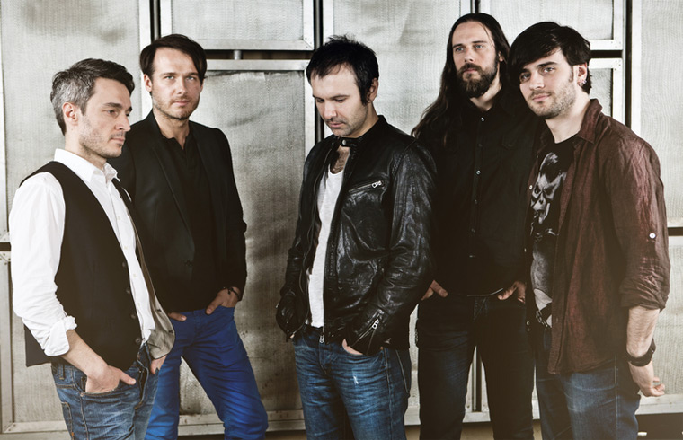
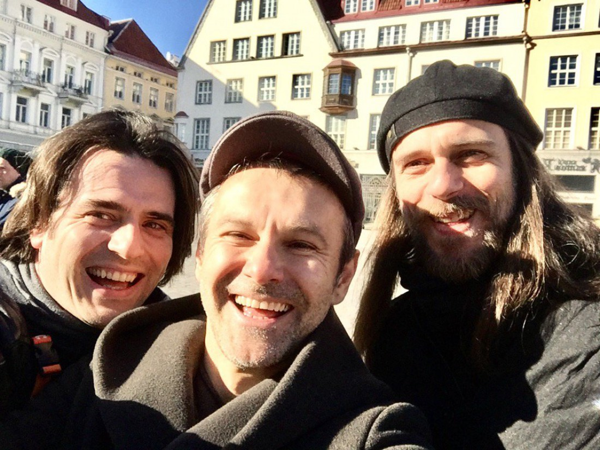
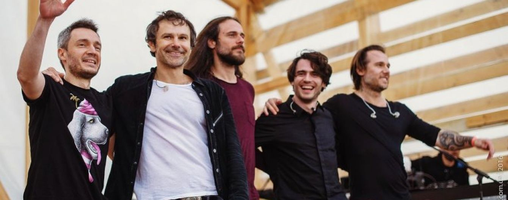
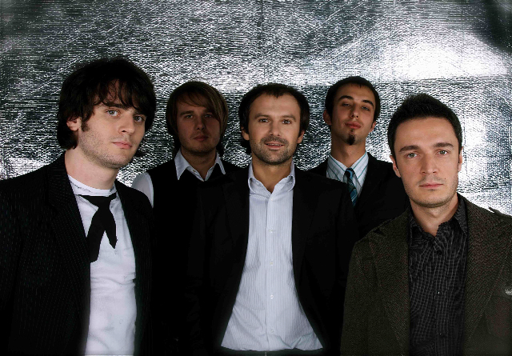
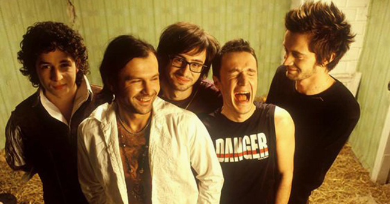
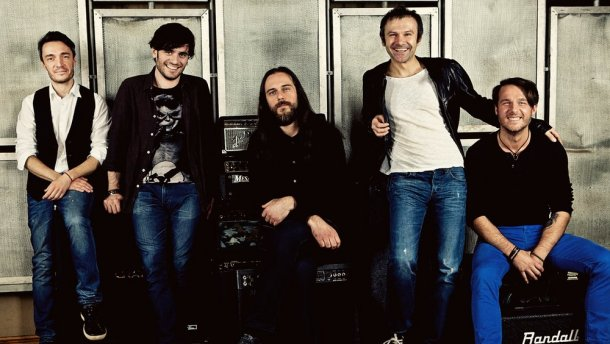
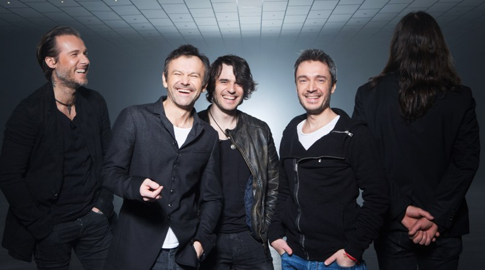
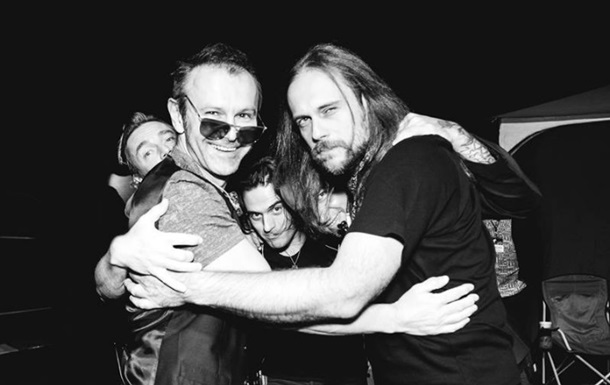
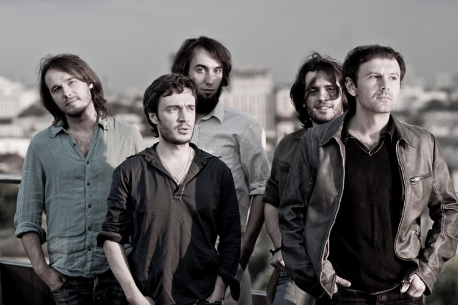
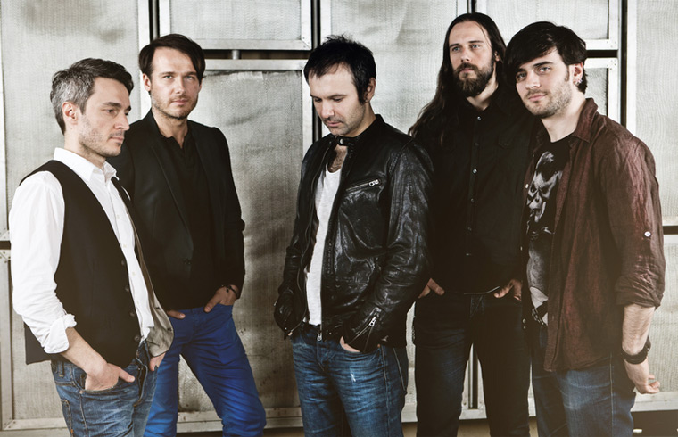
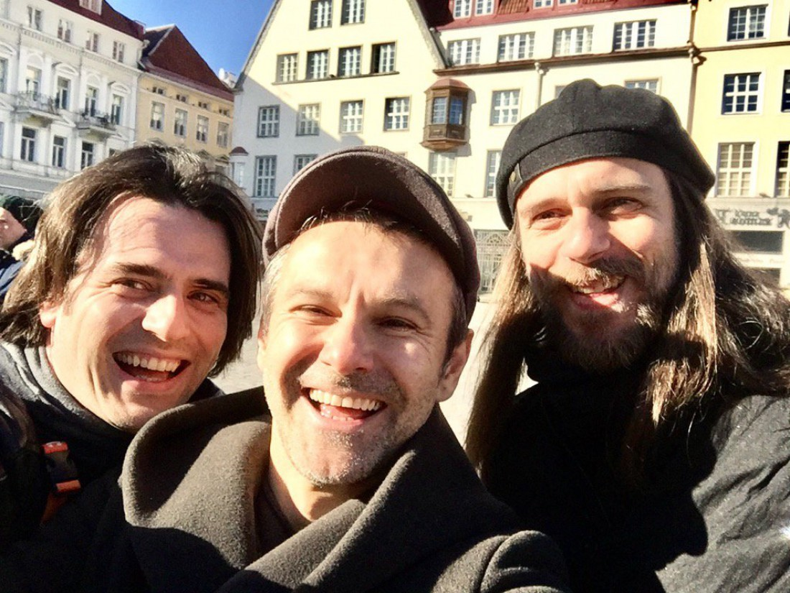
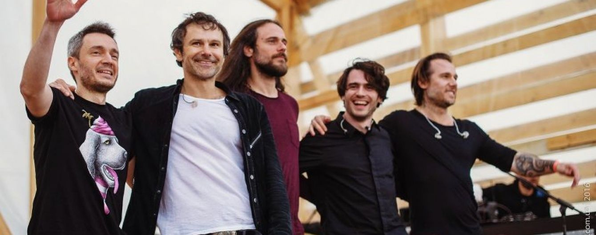
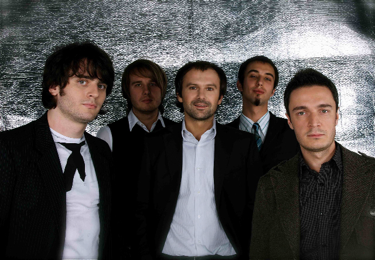
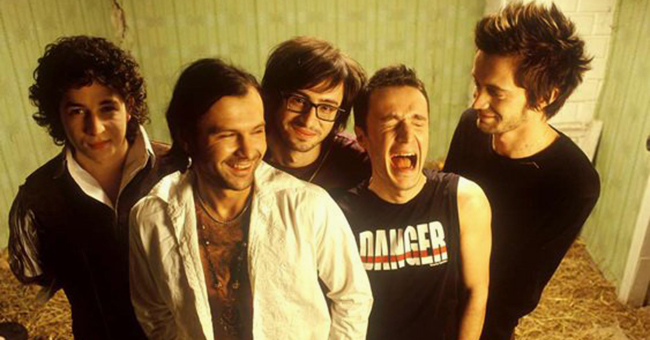
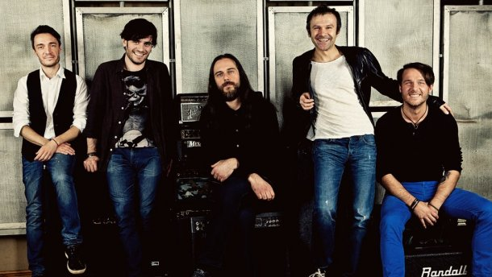
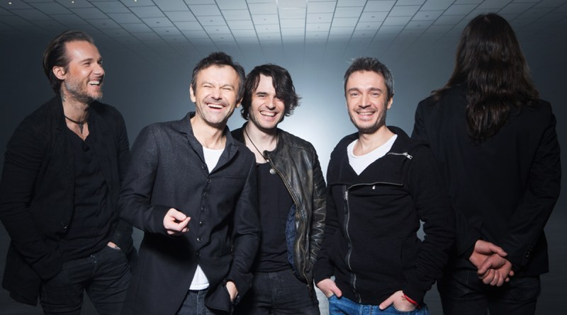
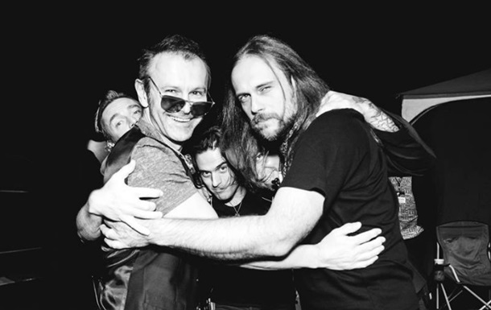